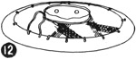

1952—How to Make Hats
by Ruby Carnahan
Hat  Made of 5" Straw Banding
Made of 5" Straw Banding

DESCRIPTION
5" straw banding comes in many different colors and color combinations. It can be used for trimming or for making an entire hat. The crown of a straw banding hat is made on a blocked foundation. A tapered crown block is most satisfactory for blocking the foundation. Brims may be blocked in sailor, mushroom or breton shape.
Beautiful draped hats can be made of 5" straw banding by thoroughly wetting braid and shaping crown on round head block and then draping brim around crown, allowing it to dry on block and applying straw sizing.
MATERIAL REQUIRED
- 2 1/2 to 3 yards of 5" straw banding.
- 1/3 yard of starched georgette for blocked foundation.
- Utility brim block No. 1514X.
- Tapered crown block
BLOCKED FOUNDATION
Instructions for blocking crown foundation on page 21.
CROWN
(Illus. 1) Place blocked georgette foundation on block. Measure two strips of banding to fit top of crown, allowing two inches on each strip for turning over side crown.
Stitch strips together and press seam open. (Illus. 2) Pin banding to top of foundation with seam in center top of crown. Turn banding over edge of crown and sew, to foundation one inch from top of crown.
Measure a piece of banding to fit side crown. Stitch ends together and press seam open. Put side crown on block with seam in back. (Illus. 3) Pin to foundation and sew around top of crown. Trim off excess foundation material 1" below bottom of crown, turn under and sew to banding around bottom of side crown. Apply straw sizing and let dry on block. Mark front of crown.
BRIM
(Illus. 4) Mark desired width of brim on flat side of brim block and draw a line around block for brim edge.
(Illus. 5) Measure a wire to fit line on block.
(Illus. 6) Join ends of wire with a joiner.
(Illus. 7) Measure a piece of straw banding to fit around wire. To measure straw banding, turn edge over wire and pin, stretch banding tight and pin to wire all the way around. Allow 3" for seam. Remove banding from wire and stitch ends together. Press seam open. Turn each side of seam under and sew down by hand. Press.
(Illus. 8) Turn this piece of banding over wire 1/4" and sew around wire.
(Illus. 9) Pin wired edge of banding to block along the line and steam press banding into headsize. Tie a blocking cord over straw around headsize on block and let dry. Apply straw sizing to brim and let dry on block. Mark front of brim.
SEWING CROWN AND BRIM TOGETHER
(Illus. 10) Match front markings on crown and brim, pin together, then sew crown to brim around headsize. Finish headsize with a swirled ribbon headband.
MUSHROOM BRIM
Follow instructions for sailor brim. To block brim in mushroom shape, (Illus. 11) pin wired edge of banding on curved side of brim block.
(Illus. 12) Steam press banding into headsize and tie blocking cord around headsize. Finish same as sailor brim.
BRETON BRIM
Measure straw banding and wire in the same manner as for sailor brim. DO NOT pin brim edge to block, and do not join wire ends until hat is finished. Place banding on block, steam around headsize and tie a blocking cord around headsize. (Illus. 13) Curve brim banding up and pull in wire on edge until brim has desired roll. (Illus. 14) Join ends of wire with a joiner. Finish same as sailor brim.
TRIMMING SUGGESTIONS FOR STRAWS
Large or small flowers, pearls or other beads, velvet bows, gros-grain ribbon, veiling, maline pompoms or ribbon cocardes may be used to trim straws. Small flowers may be placed around brim or large roses placed at back of hat or maline pompoms at the side, etc.